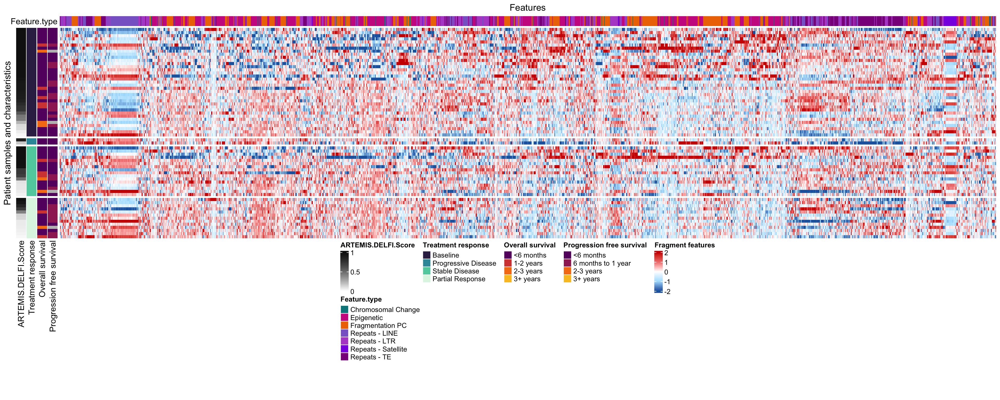

Last updated: 2025-03-27
Checks: 6 1
Knit directory: hruban_wflow/
This reproducible R Markdown analysis was created with workflowr (version 1.7.1). The Checks tab describes the reproducibility checks that were applied when the results were created. The Past versions tab lists the development history.
The R Markdown file has staged changes. To know which version of the
R Markdown file created these results, you’ll want to first commit it to
the Git repo. If you’re still working on the analysis, you can ignore
this warning. When you’re finished, you can run
wflow_publish to commit the R Markdown file and build the
HTML.
Great job! The global environment was empty. Objects defined in the global environment can affect the analysis in your R Markdown file in unknown ways. For reproduciblity it’s best to always run the code in an empty environment.
The command set.seed(20250319) was run prior to running
the code in the R Markdown file. Setting a seed ensures that any results
that rely on randomness, e.g. subsampling or permutations, are
reproducible.
Great job! Recording the operating system, R version, and package versions is critical for reproducibility.
Nice! There were no cached chunks for this analysis, so you can be confident that you successfully produced the results during this run.
Great job! Using relative paths to the files within your workflowr project makes it easier to run your code on other machines.
Great! You are using Git for version control. Tracking code development and connecting the code version to the results is critical for reproducibility.
The results in this page were generated with repository version 6dc79eb. See the Past versions tab to see a history of the changes made to the R Markdown and HTML files.
Note that you need to be careful to ensure that all relevant files for
the analysis have been committed to Git prior to generating the results
(you can use wflow_publish or
wflow_git_commit). workflowr only checks the R Markdown
file, but you know if there are other scripts or data files that it
depends on. Below is the status of the Git repository when the results
were generated:
Ignored files:
Ignored: .DS_Store
Ignored: code/rlucas/.DS_Store
Untracked files:
Untracked: README.Rmd
Untracked: data/120122_mutations.csv
Untracked: data/CA199.csv
Untracked: data/CP_PAC_artemis.xlsx
Untracked: data/CheckPAC_clinical_annotated011622.xlsx
Untracked: data/Checkpac_Test.csv
Untracked: data/Expected.csv
Untracked: data/ID_comparison.xlsx
Untracked: data/Locked_Models/
Untracked: data/PACTO Masterfile.xlsx
Untracked: data/PACTO_BL_EOT_EOS_PFS_TA_jh.xlsx
Untracked: data/Test_set_pacto.csv
Untracked: data/allfeatures_pacto.5mb.hg19.csv
Untracked: data/artemis.csv
Untracked: data/barv1.csv
Untracked: data/cellularity.csv
Untracked: data/checkpac_5mb_bins/
Untracked: data/checkpac_baseline_p2_dates.csv
Untracked: data/checkpac_bins.csv
Untracked: data/checkpac_ca199.csv
Untracked: data/checkpac_ca199_baseline_p4_dates.csv
Untracked: data/checkpac_features.csv
Untracked: data/checkpac_plasma_manifest.xlsx
Untracked: data/clinical_073123.xlsx
Untracked: data/combined_bins_102324.rds
Untracked: data/df_results_CAIRO5_2_6_ checkpac_ pacto.tsv
Untracked: data/estimates/
Untracked: data/fig2c_p2_data.rds
Untracked: data/for_leal_plot_042324.xlsx
Untracked: data/fp2_lucas_healthy.csv
Untracked: data/i07_input.xlsx
Untracked: data/loadings.rds
Untracked: data/long_bins.csv
Untracked: data/pacto_5mb_bins/
Untracked: data/pacto_bins.csv
Untracked: data/pacto_features.csv
Untracked: data/sel_chr.txt
Untracked: data/supplementary_tables.xlsx
Untracked: data/tumor_tmb.txt
Untracked: extdata/
Untracked: output/process_tcga_beta.Rmd/
Unstaged changes:
Modified: .gitignore
Modified: README.md
Staged changes:
Modified: analysis/about.Rmd
New: analysis/ext-fig1.Rmd
New: analysis/ext-fig10.Rmd
New: analysis/ext-fig11.Rmd
New: analysis/ext-fig12.Rmd
New: analysis/ext-fig13.Rmd
New: analysis/ext-fig14.Rmd
New: analysis/ext-fig15.Rmd
New: analysis/ext-fig16a.Rmd
New: analysis/ext-fig16b.Rmd
New: analysis/ext-fig17.Rmd
New: analysis/ext-fig18.Rmd
New: analysis/ext-fig19.Rmd
New: analysis/ext-fig20.Rmd
New: analysis/ext-fig21a.Rmd
New: analysis/ext-fig21b.Rmd
New: analysis/ext-fig22a.Rmd
New: analysis/ext-fig22b.Rmd
New: analysis/ext-fig23a.Rmd
New: analysis/ext-fig23b.Rmd
New: analysis/ext-fig24.Rmd
New: analysis/ext-fig2a.Rmd
New: analysis/ext-fig2b.Rmd
New: analysis/ext-fig3.Rmd
New: analysis/ext-fig4.Rmd
New: analysis/ext-fig5.Rmd
New: analysis/ext-fig6.Rmd
New: analysis/ext-fig7.Rmd
New: analysis/ext-fig8.Rmd
New: analysis/ext-fig9.Rmd
New: analysis/fig1a.Rmd
New: analysis/fig1b.Rmd
New: analysis/fig2a.Rmd
New: analysis/fig2b.Rmd
New: analysis/fig2c.Rmd
New: analysis/fig3a.Rmd
New: analysis/fig3b.Rmd
New: analysis/fig4.Rmd
New: analysis/fig5.Rmd
New: analysis/fig6a.Rmd
New: analysis/fig6b.Rmd
New: analysis/fig6c.Rmd
New: analysis/fig7a.Rmd
New: analysis/fig7b.Rmd
New: analysis/fig8.Rmd
New: analysis/fig9a.Rmd
New: analysis/fig9b.Rmd
Modified: analysis/index.Rmd
Modified: analysis/license.Rmd
New: code/functions.R
New: code/hr_plot_funcs.R
New: code/liver.tools/DESCRIPTION
New: code/liver.tools/NAMESPACE
New: code/liver.tools/R/functions.R
New: code/liver.tools/R/help.R
New: code/liver.tools/man/liver.tools.Rd
New: code/liver.tools/zzz.R
New: code/pivot_wider_pacto.R
New: code/process_ab.Rmd
New: code/process_tcga_beta.Rmd
New: code/rlucas/DESCRIPTION
New: code/rlucas/NAMESPACE
New: code/rlucas/R/functions.R
New: code/rlucas/R/help.R
New: code/rlucas/data-derived/SummarizedExperiment.R
New: code/rlucas/data/lucas_5mb.rda
New: code/rlucas/data/metadata.rda
New: code/rlucas/data/prediction_lucas.rda
New: code/rlucas/data/se.rda
New: code/rlucas/data/valid_metadata.rda
New: code/rlucas/inst/extdata/survival_analysis_samples.xlsx
New: code/rlucas/man/rlucas.Rd
New: code/useful.stuff.aa/DESCRIPTION
New: code/useful.stuff.aa/NAMESPACE
New: code/useful.stuff.aa/R/convenience.R
New: code/useful.stuff.aa/R/models.R
New: code/useful.stuff.aa/data/liver_meta.rda
New: code/useful.stuff.aa/data/lucas_meta.rda
New: code/utility_funcs.R
Note that any generated files, e.g. HTML, png, CSS, etc., are not included in this status report because it is ok for generated content to have uncommitted changes.
There are no past versions. Publish this analysis with
wflow_publish() to start tracking its development.
The vertical axis is categorized by all patients with plasma samples at baseline, and at follow-up for each of the clinical RECIST 1.1 response categories and sorted by ARTEMIS-DELFI scores in descending order. All molecular features evaluated are plotted along the horizontal axis and colored by feature type. The heatmap color scale reflects the deviation of cfDNA features as compared to the mean of 10 non-cancer individuals.
library(tidyverse)
library(openxlsx)
library(devtools)
library(ComplexHeatmap)
library(circlize)
library(data.table)
library(here)
library(scales)
library(viridis)
library(readxl)
load_all(here("code/rlucas"))# Load metadata
clean_data <- read_excel(here("data/supplementary_tables.xlsx"), sheet="Table S4",range="A2:S42")
dm.meta <- read_excel(here("data/supplementary_tables.xlsx"), sheet="Table S5",range="A2:N207")
# Load DELFI features
features <- read_csv(here("data/pacto_features.csv"))
bins5mb2<-read_csv(here("data/pacto_bins.csv"))
# Load ARTEMIS features
artemis <- as_tibble(read_xlsx(here("data/CP_PAC_artemis.xlsx"), sheet="PACartemis"))
e <- fread(here("data/Expected.csv"))
epi <- read_csv(here("data/Checkpac_Test.csv"))Warning: Unknown or uninitialised column: `Study ID`.meta<-dm.meta %>% mutate('type'= case_when((Category == 'Baseline') ~ 'PACTO Baseline',
(Category== 'Partial Response') ~ 'PACTO Endpoint Partial Response',
(Category== 'Stable Disease') ~ 'PACTO Endpoint Stable Disease',
(Category=='Progressive Disease') ~'PACTO Endpoint Progressive Disease'))
meta<-meta %>% select(id, type)
dat<-inner_join(artemis, meta %>% select(id,type),by="id")
e<-e %>% filter(total_kmers>1000)
e$fam<-sapply(str_split(e$feature,"#"),"[",2)
e$fam<-sapply(str_split(e$fam,"_"),"[",1)
e<-e %>% mutate(fam=if_else(fam %in% c("rRNA","snRNA","scRNA","tRNA","srpRNA"),"TE",fam))
e<-e %>% mutate(fam=if_else(fam %in% c("DNA","DNA?","RC","Retroposon"),"TE",fam))
e<-e %>% mutate(fam=if_else(fam %in% "SINE","TE",fam))
e<-e %>% mutate(fam=if_else(is.na(fam),"Satellite",fam))
artemis<-dat %>% select(id,type,e$feature)
test<-artemis %>% gather(key=feature,value=count,-id,-type)
test<-inner_join(test,e %>% select(feature,fam),by="feature")
test<-inner_join(test,e %>% select(feature,fam,total_kmers),by="feature")
test<-test %>% group_by(id,fam.x,type) %>% summarize(c=scale(count)[,1],f=feature)Warning: Returning more (or less) than 1 row per `summarise()` group was deprecated in
dplyr 1.1.0.
ℹ Please use `reframe()` instead.
ℹ When switching from `summarise()` to `reframe()`, remember that `reframe()`
always returns an ungrouped data frame and adjust accordingly.
Call `lifecycle::last_lifecycle_warnings()` to see where this warning was
generated.`summarise()` has grouped output by 'id', 'fam.x', 'type'. You can override
using the `.groups` argument.artemis<-test
artemis[,c('fam.x', "type")] <- NULL
artemishelp<-artemis %>%
pivot_wider(names_from = f, values_from = c)
epi1<-select(epi,contains(c("id","H3K","H4K","states")))
artemishelp<-inner_join(artemishelp,epi1, by= "id")
multinucs <- bins5mb2 %>% group_by(id) %>% summarize(multinucratio = sum(multinucs)/(sum(short+long)))
features <- inner_join(multinucs, features, by="id")
features<-inner_join(features, artemishelp, by="id")
labels <- dm.meta
features <- inner_join(labels, features, by=c("id"="id"))
dna_features <- features %>% select(36:1880)
dna_features <- as.matrix(dna_features)
dna_features <- apply(dna_features, 2, scale)
rownames(dna_features) <- features$idcol_fun_body = colorRamp2(c(-2, -1, 0, 1, 2), rev(c('red3', 'lightcoral', 'white', 'lightskyblue1', '#2166ac')))
col_fun_row = list(
`Overall survival` = structure(c("#65156e",'#9f2a63', '#d44842', '#f57d15', '#fac228'), names = c('<6 months', '6 months to 1 year', '1-2 years','2-3 years', '3+ years')),
`Progression free survival` = structure(c('#65156e','#9f2a63', '#d44842', '#f57d15','#fac228'), names = c('<6 months', '6 months to 1 year', '1-2 years','2-3 years','3+ years')),
`Treatment response` = structure(c('#382A54FF', '#60CEACFF', '#DEF5E5FF','#3497A9FF'), names = c('Baseline', 'Stable Disease', 'Partial Response', 'Progressive Disease')),
`ARTEMIS.DELFI.Score` = colorRamp2(c(0, 1), c('#ffffff', '#111111')))
col_fun_column = list(`Feature.type` = structure(c('turquoise4','darkorange2', 'mediumpurple3',"darkmagenta","blueviolet","mediumorchid3","maroon3"), names = c('Chromosomal Change', 'Fragmentation PC', 'Repeats - LINE',"Repeats - TE","Repeats - Satellite","Repeats - LTR","Epigenetic")))
ht <- Heatmap(dna_features, name = "Fragment features", col = col_fun_body, show_row_dend = FALSE, show_column_dend = FALSE, show_row_names = FALSE, show_column_names = FALSE, row_title = 'Patient samples and characteristics', column_title = 'Features', left_annotation = rowAnnotation(df = sample_annot, col = col_fun_row, annotation_name_side= 'bottom'), top_annotation = columnAnnotation(df = features_annot, col = col_fun_column, annotation_name_side= 'left'), row_split = split, cluster_row_slices = FALSE, cluster_rows = FALSE)
draw(ht, annotation_legend_side = "bottom", heatmap_legend_side = "bottom", padding = unit(c(20, 2, 2, 2), "mm"))
sessionInfo()R version 4.4.1 (2024-06-14)
Platform: aarch64-apple-darwin20
Running under: macOS 15.3.1
Matrix products: default
BLAS: /Library/Frameworks/R.framework/Versions/4.4-arm64/Resources/lib/libRblas.0.dylib
LAPACK: /Library/Frameworks/R.framework/Versions/4.4-arm64/Resources/lib/libRlapack.dylib; LAPACK version 3.12.0
locale:
[1] en_US.UTF-8/en_US.UTF-8/en_US.UTF-8/C/en_US.UTF-8/en_US.UTF-8
time zone: America/New_York
tzcode source: internal
attached base packages:
[1] grid stats graphics grDevices utils datasets methods
[8] base
other attached packages:
[1] rlucas_0.0.3 readxl_1.4.5 viridis_0.6.5
[4] viridisLite_0.4.2 scales_1.3.0 here_1.0.1
[7] data.table_1.17.0 circlize_0.4.16 ComplexHeatmap_2.20.0
[10] devtools_2.4.5 usethis_3.1.0 openxlsx_4.2.8
[13] lubridate_1.9.4 forcats_1.0.0 stringr_1.5.1
[16] dplyr_1.1.4 purrr_1.0.4 readr_2.1.5
[19] tidyr_1.3.1 tibble_3.2.1 ggplot2_3.5.1
[22] tidyverse_2.0.0 workflowr_1.7.1
loaded via a namespace (and not attached):
[1] gridExtra_2.3 remotes_2.5.0
[3] rlang_1.1.5 magrittr_2.0.3
[5] clue_0.3-66 GetoptLong_1.0.5
[7] git2r_0.35.0 matrixStats_1.5.0
[9] compiler_4.4.1 getPass_0.2-4
[11] png_0.1-8 callr_3.7.6
[13] vctrs_0.6.5 profvis_0.4.0
[15] pkgconfig_2.0.3 shape_1.4.6.1
[17] crayon_1.5.3 fastmap_1.2.0
[19] magick_2.8.5 XVector_0.44.0
[21] ellipsis_0.3.2 promises_1.3.2
[23] rmarkdown_2.29 sessioninfo_1.2.3
[25] tzdb_0.4.0 UCSC.utils_1.0.0
[27] ps_1.9.0 bit_4.6.0
[29] xfun_0.51 zlibbioc_1.50.0
[31] cachem_1.1.0 GenomeInfoDb_1.40.1
[33] jsonlite_1.9.1 later_1.4.1
[35] DelayedArray_0.30.1 parallel_4.4.1
[37] cluster_2.1.8.1 R6_2.6.1
[39] bslib_0.9.0 stringi_1.8.4
[41] RColorBrewer_1.1-3 pkgload_1.4.0
[43] GenomicRanges_1.56.2 jquerylib_0.1.4
[45] cellranger_1.1.0 SummarizedExperiment_1.34.0
[47] Rcpp_1.0.14 iterators_1.0.14
[49] knitr_1.49 IRanges_2.38.1
[51] Matrix_1.7-3 httpuv_1.6.15
[53] timechange_0.3.0 tidyselect_1.2.1
[55] abind_1.4-8 rstudioapi_0.17.1
[57] yaml_2.3.10 doParallel_1.0.17
[59] codetools_0.2-20 miniUI_0.1.1.1
[61] processx_3.8.6 pkgbuild_1.4.6
[63] lattice_0.22-6 Biobase_2.64.0
[65] shiny_1.10.0 withr_3.0.2
[67] evaluate_1.0.3 desc_1.4.3
[69] urlchecker_1.0.1 zip_2.3.2
[71] pillar_1.10.1 MatrixGenerics_1.16.0
[73] whisker_0.4.1 foreach_1.5.2
[75] stats4_4.4.1 generics_0.1.3
[77] vroom_1.6.5 rprojroot_2.0.4
[79] hms_1.1.3 S4Vectors_0.42.1
[81] munsell_0.5.1 xtable_1.8-4
[83] glue_1.8.0 tools_4.4.1
[85] fs_1.6.5 colorspace_2.1-1
[87] GenomeInfoDbData_1.2.12 cli_3.6.4
[89] S4Arrays_1.4.1 rematch_2.0.0
[91] gtable_0.3.6 sass_0.4.9
[93] digest_0.6.37 BiocGenerics_0.50.0
[95] SparseArray_1.4.8 rjson_0.2.23
[97] htmlwidgets_1.6.4 memoise_2.0.1
[99] htmltools_0.5.8.1 lifecycle_1.0.4
[101] httr_1.4.7 GlobalOptions_0.1.2
[103] mime_0.12 bit64_4.6.0-1